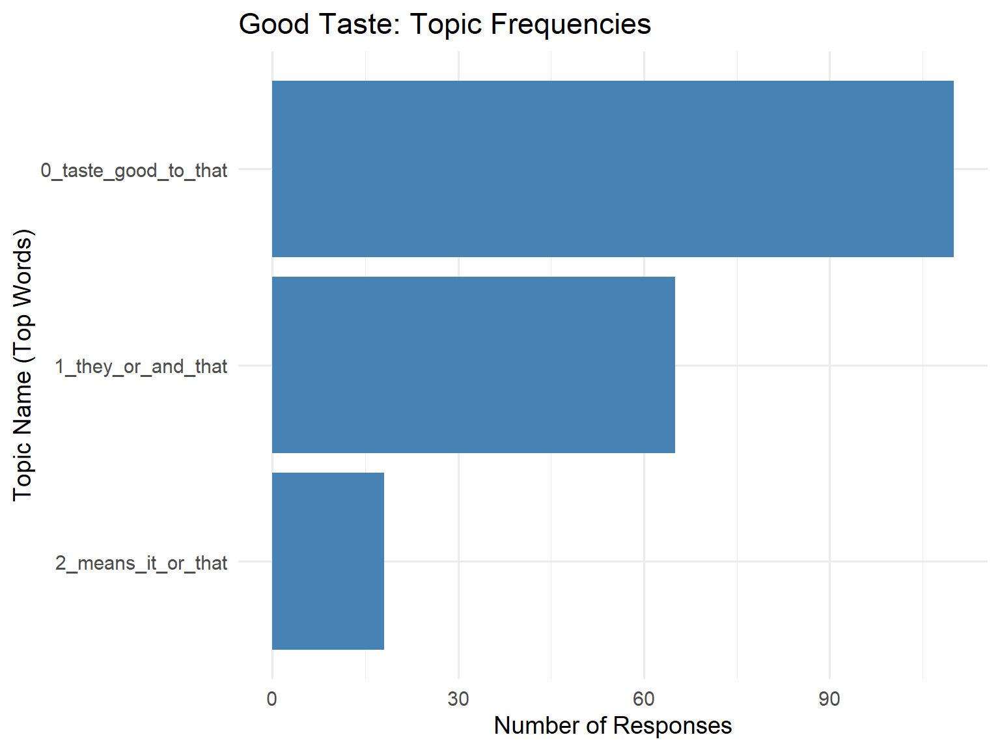
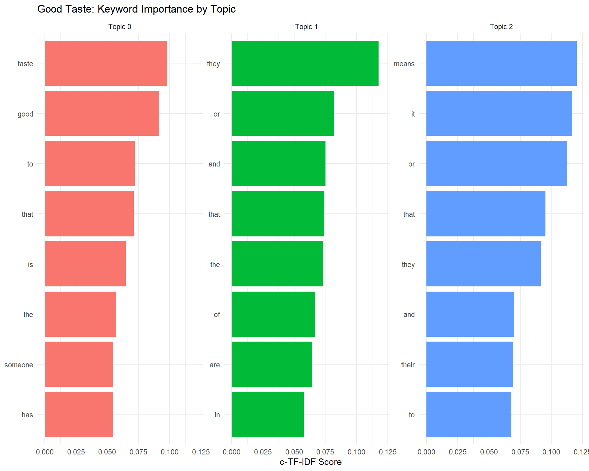

Topic Modeling for ‘Good Taste’ and ‘Bad Taste’ Definitions
Note
This report was generated using AI under general human direction. At the time of generation, the contents have not been comprehensively reviewed by a human analyst.
Introduction
This report uses BERTopic to extract topics from open-ended survey responses defining what constitutes “Good Taste” and “Bad Taste”. The BERTopic models were trained in Python and the results saved to disk. We visualize the distributions of topics below using the tidyverse and ggplot2.
Setup and data loading
We load the necessary R packages and load our summarized topic data.
library(dplyr)
Attaching package: 'dplyr'
The following objects are masked from 'package:stats':
filter, lag
The following objects are masked from 'package:base':
intersect, setdiff, setequal, union
The short texts defining “Good Taste” and “Bad Taste” were clustered into 5 broad themes each using BERTopic. We load the summarized results from those models.
# Load the pre-computed topic info tablesgood_topic_info <-read_csv("Tabs/good_topic_info.csv", show_col_types =FALSE)bad_topic_info <-read_csv("Tabs/bad_topic_info.csv", show_col_types =FALSE)# Clean up the Python list formatting in the Representation columnclean_keywords <-function(rep_str) {str_remove_all(rep_str, "\\[|\\]|'")}good_topic_info$Keywords <-sapply(good_topic_info$Representation, clean_keywords)bad_topic_info$Keywords <-sapply(bad_topic_info$Representation, clean_keywords)# Remove the messy Representation and NaN Representative_Docs columns for the tablegood_topic_table <- good_topic_info %>%select(Topic, Count, Name, Keywords)bad_topic_table <- bad_topic_info %>%select(Topic, Count, Name, Keywords)# Ensure Tabs directory exists and save the tables as HTMLdir.create("Tabs", showWarnings =FALSE)# Write out simple HTML tableswriteLines( knitr::kable(good_topic_table, format ="html"), "Tabs/good_taste_summary_table.html")writeLines( knitr::kable(bad_topic_table, format ="html"), "Tabs/bad_taste_summary_table.html")head(good_topic_info, 10)
# A tibble: 5 × 6
Topic Count Name Representation Representative_Docs Keywords
<dbl> <dbl> <chr> <chr> <lgl> <chr>
1 -1 36 -1_good_taste_person_… ['good', 'tas… NA good, t…
2 0 95 0_things_like_art_app… ['things', 'l… NA things,…
3 1 88 1_taste_good_say_like ['taste', 'go… NA taste, …
4 2 41 2_good_taste_person_t… ['good', 'tas… NA good, t…
5 3 18 3_means_like_good_kno… ['means', 'li… NA means, …
head(bad_topic_info, 10)
# A tibble: 7 × 6
Topic Count Name Representation Representative_Docs Keywords
<dbl> <dbl> <chr> <chr> <lgl> <chr>
1 -1 76 -1_taste_bad_like_thi… ['taste', 'ba… NA taste, …
2 0 95 0_taste_bad_person_th… ['taste', 'ba… NA taste, …
3 1 44 1_like_things_just_ca… ['like', 'thi… NA like, t…
4 2 25 2_person_people_thing… ['person', 'p… NA person,…
5 3 16 3_art_dont_taste_bad ['art', 'dont… NA art, do…
6 4 11 4_means_usually_like_… ['means', 'us… NA means, …
7 5 11 5_music_shows_enjoyin… ['music', 'sh… NA music, …
Visualizing topic distributions
We use ggplot2 to visualize the distribution and prominence of each theme.
(Note: Topic -1 in BERTopic refers to outliers that could not be confidently assigned to a cluster. We exclude it from the visualizations below.)
# Ensure Plots directory existsdir.create("Plots", showWarnings =FALSE)# Good Taste Topic Frequenciesp_good <-ggplot(good_topic_info %>%filter(Topic !=-1), aes(x =reorder(Name, Count), y = Count)) +geom_bar(stat ="identity", fill ="steelblue") +coord_flip() +theme_minimal(base_size =14) +labs(title ="Good Taste: Topic Frequencies", x ="Topic Name (Top Words)", y ="Number of Responses" )print(p_good)

ggsave("Plots/good_taste_topics.png", plot = p_good, width =8, height =6)# Bad Taste Topic Frequenciesp_bad <-ggplot(bad_topic_info %>%filter(Topic !=-1), aes(x =reorder(Name, Count), y = Count)) +geom_bar(stat ="identity", fill ="indianred") +coord_flip() +theme_minimal(base_size =14) +labs(title ="Bad Taste: Topic Frequencies", x ="Topic Name (Top Words)", y ="Number of Responses" )print(p_bad)
To better understand why each topic was formed, we can look at the mathematical importance (c-TF-IDF score) of the top keywords for each topic. We extract these weights directly from the saved model metadata.
Interpretation
Good Taste themes seem heavily divided between definitions relying on external consensus or high-art aesthetics (Topic 0: art, appreciate, pleasing) versus definitions emphasizing alignment with personal preferences (Topic 1: say, like, person).
Bad Taste themes include lack of independence or “following the crowd” (Topic 0), enjoying “loud” or “gaudy” things (Topic 1, Topic 2), or specifically enjoying “low-brow” mass media (Topic 5: music, reality tv, rap, movies).
# Function to parse the topics.json file into a ggplot-friendly dataframeextract_keyword_weights <-function(json_path) {# Read from root path because the Quarto file runs from the report/ dir# but the string provided was relative to root in my tests. topics_data <-fromJSON(json_path)$topic_representations# Remove the outlier topic "-1" topics_data[["-1"]] <-NULL# Convert nested list into a dataframe df_list <-lapply(names(topics_data), function(topic_id) {# Each item is a matrix/array where [,1] is the word and [,2] is the score mat <- topics_data[[topic_id]]data.frame(Topic =paste("Topic", topic_id),Word =as.character(mat[,1]),Score =as.numeric(mat[,2]),stringsAsFactors =FALSE ) })do.call(rbind, df_list)}# Extract for Good Tastegood_weights <-extract_keyword_weights("../good_taste_model/topics.json")# Plot Good Taste Keywordsp_good_keys <- good_weights %>%group_by(Topic) %>%top_n(8, Score) %>%# Get top 8 words per topicungroup() %>%mutate(Word =reorder_within(Word, Score, Topic)) %>%ggplot(aes(x = Word, y = Score, fill = Topic)) +geom_col(show.legend =FALSE) +facet_wrap(~ Topic, scales ="free_y") +coord_flip() +scale_x_reordered() +theme_minimal() +labs(title ="Good Taste: Keyword Importance by Topic",x =NULL, y ="c-TF-IDF Score" )print(p_good_keys)

ggsave("Plots/good_taste_keywords.png", plot = p_good_keys, width =10, height =8)# Extract for Bad Tastebad_weights <-extract_keyword_weights("../bad_taste_model/topics.json")# Plot Bad Taste Keywordsp_bad_keys <- bad_weights %>%group_by(Topic) %>%top_n(8, Score) %>%ungroup() %>%mutate(Word =reorder_within(Word, Score, Topic)) %>%ggplot(aes(x = Word, y = Score, fill = Topic)) +geom_col(show.legend =FALSE) +facet_wrap(~ Topic, scales ="free_y") +coord_flip() +scale_x_reordered() +theme_minimal() +labs(title ="Bad Taste: Keyword Importance by Topic",x =NULL, y ="c-TF-IDF Score" )print(p_bad_keys)
Example Responses (Pseudo-Representative Documents)
Because the heavy mathematical models only saved the keyword weights to disk, we can use R to find the best example responses for each topic. We do this by scanning the original survey text and finding the quotes that contain the highest number of a topic’s core keywords.
# Load the original survey textraw_data <-read_csv("../data/FolkTaste_CleanData.csv", show_col_types =FALSE)valid_data <- raw_data %>%filter(Taste_Possibility =='YES')good_docs <- valid_data$GoodTaste_Def[!is.na(valid_data$GoodTaste_Def)]bad_docs <- valid_data$BadTaste_Def[!is.na(valid_data$BadTaste_Def)]# Function to score documents based on keyword matching and return the top 2find_examples <-function(docs, keywords_str, n =2) {# Split the comma-separated keywords keys <-str_split(keywords_str, ",\\s*")[[1]]# Score each document by counting keyword occurrences scores <-sapply(docs, function(d) {if (is.na(d) ||nchar(trimws(d)) <10) return(-1) # Penalize empty/very short responses d_lower <-tolower(d)sum(sapply(keys, function(k) str_detect(d_lower, fixed(k)))) })# Get indices of the top scoring documents top_idx <-order(scores, decreasing =TRUE)[1:n]# Format as a nice HTML bulleted listpaste(paste0("• <em>\"", docs[top_idx], "\"</em>"), collapse ="<br><br>")}# Apply to Good Tastegood_topic_table$Example_Responses <-sapply(good_topic_table$Keywords, function(kw) {find_examples(good_docs, kw, n =2)})# Apply to Bad Tastebad_topic_table$Example_Responses <-sapply(bad_topic_table$Keywords, function(kw) {find_examples(bad_docs, kw, n =2)})# Save the updated tables to the Tabs directorywriteLines( knitr::kable(good_topic_table, format ="html", escape =FALSE), "Tabs/good_taste_examples_table.html")writeLines( knitr::kable(bad_topic_table, format ="html", escape =FALSE), "Tabs/bad_taste_examples_table.html")
Good Taste Examples
Topic
Name
Example_Responses
-1
-1_good_taste_person_usually
• "To mean it means that the someone being referred to makes or usually for the most part things which are very good in terms of quality or appearance. In reality though it effectively usually means that the person who is being referred to makes choices usually aligned with mine. A person who has good taste may also be someone who consistently chooses things which are just generally popular overall."
• "To me it usually means that they can think for themselves. They don't just say they like a book because it's on the bestseller list. They've read enough, listened to enough, or seen enough to form a good opinion and make up their own minds about what they like. However, their taste isn't too "out there.""
0
0_things_like_art_appreciate
• "This is subjective. When we say that someone has good taste, it could mean that they have a deep understanding of all the aspects of a certain topic and that their personal bias is one that shows a true appreciation for said subject. It could also mean that they like things that others do, so as to follow a trend."
• "If someone has a good taste, then they like things that many people view are "good". It's a very subjective thing to have a "good taste", I think it depends on how you grew up. In certain areas, it'd be luxury things or elegant things that are defined as good taste. In other parts, it could just be like something that isn't as "Trendy" as what most people like. I'd also say that people with "good taste", tend to think on their own and don't follow what others like."
1
1_taste_good_say_like
• "I mean the person likes things that are in the same taste as I. If I think something is attractive, then for me to say that they have good taste would say that they have the same taste in whatever subject we are talking about as I. I love old rock and roll, so if the person likes it, I would say that they have good taste."
• "This can mean different things based on who is saying it of course. Maybe a rich person will think good taste is having antiques, a newly rich person might think good taste is having fancy clothes/cars or a movie snob might like how movies are composed."
2
2_good_taste_person_think
• "When I think about what it means to have good taste, several things come to mind. The person may have a sense of colors that look well together. They may have ideas of design, that are appealing to many people. A specific example of having good taste might be a clothing designer who has a knack for combining the 'right' colors and creating a figure-flattering style."
• "To mean it means that the someone being referred to makes or usually for the most part things which are very good in terms of quality or appearance. In reality though it effectively usually means that the person who is being referred to makes choices usually aligned with mine. A person who has good taste may also be someone who consistently chooses things which are just generally popular overall."
3
3_means_like_good_knows
• "I think it means that people chose to do or see or say or dress or participate in a way that is morally good and not offensive to other people. They don't like things that are garish. They respect other people and interact with them as they would want others to interact with them. They are not exhibitionists."
• "I believe that it means that they have a good selection of goods or services used by them. It means other people value those choices and admire their selection of goods or services. It makes the person more desirable because of a finer choices in life."
Bad Taste Examples
Topic
Name
Example_Responses
-1
-1_taste_bad_like_things
• "Bad taste can be different to everyone, for me it would be something I dislike. An example: if I dislike a piece of art and someone else likes it, I would say this person has bad taste in art."
• "Someone who has bad taste in my opinion would mean that my opinions of those tastes are bad. To put simply, the tastes that I dislike would make me think a person who likes them has bad taste."
0
0_taste_bad_person_things
• "When I say bad taste, it means that the person does not pay attention to the finer details of things and just decide to follow everyone without knowing why they picked it. For example, in fashion, people would pick the worst outfits that despite having unique patterns, they did it in a way that it looks cheap and does not elevate their look."
• "I'd say someone with a "bad taste" doesn't really like things on their own, they tend to be a follower for what's popular so they don't end up with much of a taste at all. I'd also say it's when they like a lot of things that other people tend to dislike, so they'd have a "bad taste" compared. Again though, really depends on cultures and areas they grew up, what may be bad tastes where they are, could be good tastes elsewhere."
1
1_like_things_just_care
• "Maybe they like gaudy decor or crass music, or explicit paintings. Or maybe they just like whatever is currently popular and it changes with that."
• "They like things that are outside the bounds of acceptability or like things that are just plain dumb."
2
2_person_people_things_loud
• "Nowadays is only a joke to people who likes things that I personally don't like or dislike. In the past I would mean it, but after time and experience, I have learned taste is a subjective aspect in the human nature."
• "Someone who may have their own ideas about the aesthetic qualities of objects which generally go against beliefs held by most people in society. Someone who has a sense of humor that is sophomoric and doesn't realize that others may take offense. A person who can't distinguish the qualities that make items desirable to the majority."
3
3_art_dont_taste_bad
• "When I say that someone has bad taste, I generally mean that I view negatively the art/music/literature that that person enjoys. That is, I don't think it conveys any meaning, I don't think that the person who created it has any talent, and I don't see the value in it. I have to admit that it often means that this is very subjective, in that it often means that I myself don't like the art/music/literature at all myself."
• "Bad taste can be different to everyone, for me it would be something I dislike. An example: if I dislike a piece of art and someone else likes it, I would say this person has bad taste in art."
4
4_means_usually_like_quality
• "It means they do not have a clue about what looks good, what is quality, what is in style, is desirable. Usually they like gaudy and tacky things that may be expensive but horrible looking."
• "It means something looks horrible on them or the music isn't to their liking. It depends on the person and who you're explaining it to. Each person has their own taste."
5
5_music_shows_enjoying_tv
• "When someone has a bad taste they are probably focused on a single genre and completely ignore everything else. Usually they would watch poorly scripted shows or movies, reality tv, etc."
• "When someone has "bad taste" I tend to think they enjoy media, books, and food made for the lowest common denominator. They are easily entertained by things like reality television, Michael Bay films with tons of explosions, and their favorite music is whatever the latest generic popular rap/pop artist has on the radio."